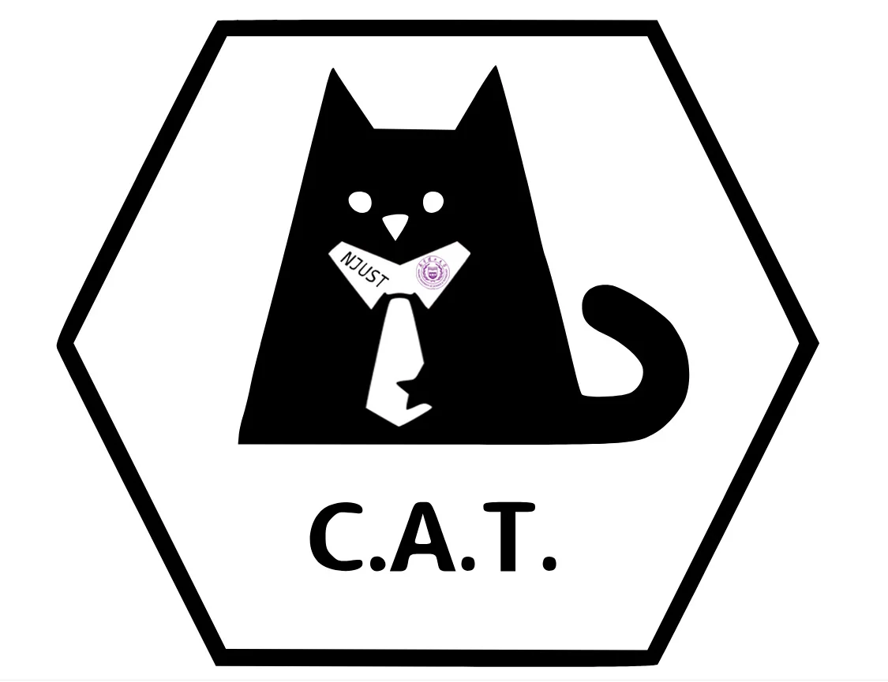

南京理工大学 C.A.T. 战队建于2020年，C.A.T 意为 Cyber Attack Trap/Threaten，同时也是 CTF 比赛中常用的命令 cat /flag。
cat /flag
现役成员遍布南京理工大学两校区各年级本科生，退役成员就职于华为、字节跳动等公司。
曾获得江苏省领航杯二等奖，江苏省网络空间安全竞赛二等奖，常年在XCTF系列赛以及各大高校组织的公开赛中排名前50，最高获得MRCTF第十九名。
